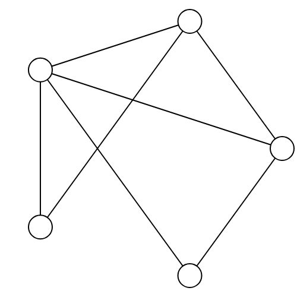
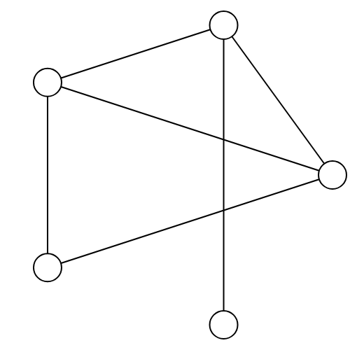
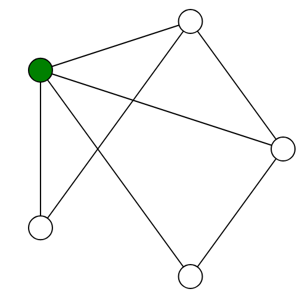
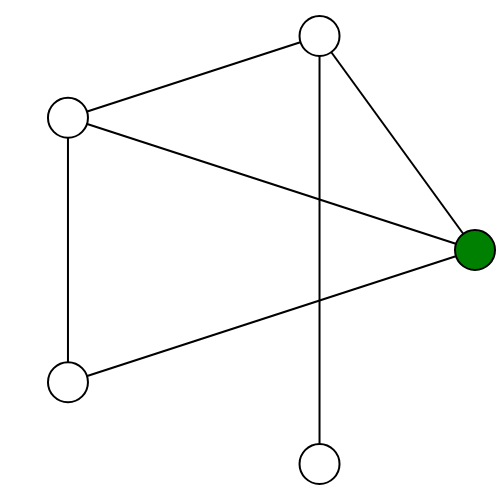
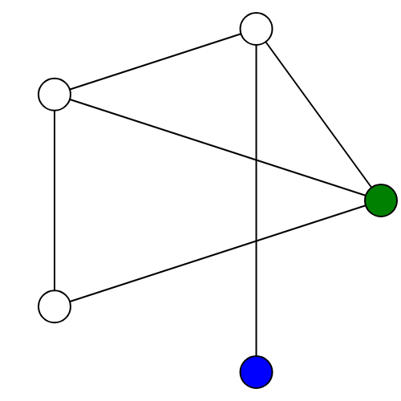
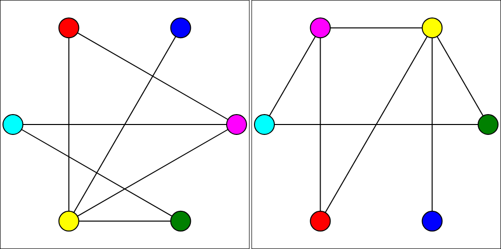

Minimum Number of Vertices:
Maximum Number of Vertices:
Number of Shapes:
Caution: Having more than 7 vertices (1 shape), 9 vertices (2 shapes) or 11 vertices (3 shapes) may cause noticable delay when generating a new game.
Controls
Click on a vertex (circle, triangle, square) to play there.
h: hint
m: switch between dragging vertices and making moves
n: new game
Rules
The Ehrenfeucht-Fraïssé Game is a game about first order logic and the inevitable end of all things. Players take turns matching up the vertices (shown as circles, etc.) of two graphs (networks):
First, Player I (Spoiler) selects a vertex from either graph that has yet to be selected, and colors it a new color.
Next, Player II (Duplicator) selects a vertex from the other graph that has yet to be selected, and colors it the same color, forming a match between the two vertices of that color.
The game ends if either:
Two vertices that are connected by an edge (line) in one graph are matched with vertices which are not connected in the other.
A vertex of one shape gets matched with a vertex of another shape.
Or, there are no more vertices left to pick.
The game will inevitably end. Spoiler's (Player I's) goal is to end the game as quickly as possible. Duplicator's (Player II's) goal is to last as long as possible.
The Duplicator AI is currently a poor sport and will simply forfeit if it cannot find a suitable match.
Most versions of the game allow Spoiler to pick previously selected vertices, so long as they are matched with the vertex the original vertex was matched to. Since Spoiler, in seeking to end the game as quickly as possible, has no reason to do this, it is disallowed.
What's Happening?
It is suggested that you try playing the game a bit before :
Basic Strategy
Player I (Spoiler)'s goal is to exploit differences between the graphs to end the game as soon as possible. For instance, suppose the left graph has a vertex which is connected to every other vertex, while the right graph does not.
 
Spoiler can play at the vertex in the left graph which is connected to every other vertex. No matter which vertex Player II (Duplicator) matches it with, that vertex will not be connected to every other vertex.
 
Spoiler can then take advantage of the vertex in the second graph which is not connected to the original vertex to win the game. No matter where Duplicator moves, they have lost.

Player II (Duplicator)'s goal is to exploit similarities between the graphs to prolong the game. In fact, if the two graphs are the same (or scrambled versions of one another), Duplicator can keep the game going as long as possible!

Connection with Logic
So the main goal of the game is to recognize the similarities and differences between the two graphs. Features to pay attention to, include:
If there are no vertices
If there is a vertex which is connected to every other vertex
If there is a vertex which is not connected to any other vertex
If there is a vertex which is connected to every other vertex except one
If there is a vertex which is not connected to any other vertex except one
We can write all of these in terms of a very small set of pieces:
Variables to talk about vertices (a,b,c,etc.)
There is (another) vertex (∃)
Every (other) vertex (∀)
And, Or, Not (∧, ∨, ¬)
Is connected to (˜)
Equality and inequality (=/≠)
Grammatical pieces (such that/it is the case that)
Is a circle, triangle, square (if shapes are active)
The language is awkward, but we can rewrite our features in this language:
There is a vertex which is connected to every other vertex
There is a vertex
a
such that
for every other vertex
b
it is the case that
a
is connected to
b
∃
a
:
∀
b (≠ a)
:
a
∼
b
∃ a: ∀ b ≠ a: a ∼ b
What's remarkable is that:
Theorem (Ehrenfeucht, Fraïssé): The number of turns it takes for spoiler to exploit a particular difference between two graphs is the minimum number of variables needed to express that difference in the language above.
Furthermore:
The instructions Spoiler must follow to exploit that difference can be fairly straightforwardly read off of the logical formula expressing that difference.
The minimum number of turns Spoiler needs to win the game is the number of variables in the formula that distinguishes the two graphs with the fewest variables.
Read More
You can learn more about Ehrenfeucht–Fraïssé Games at: